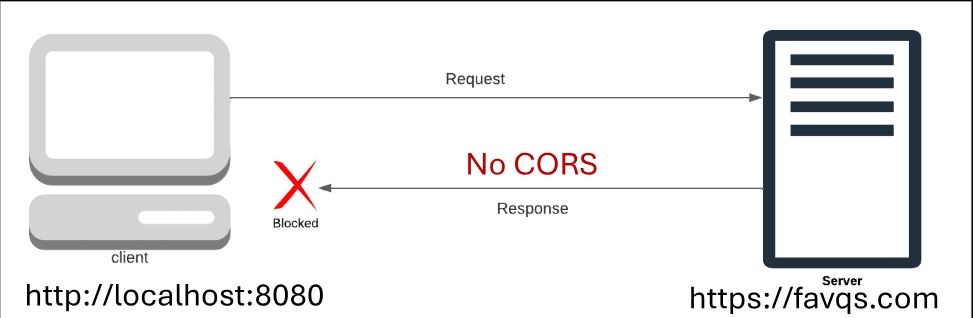
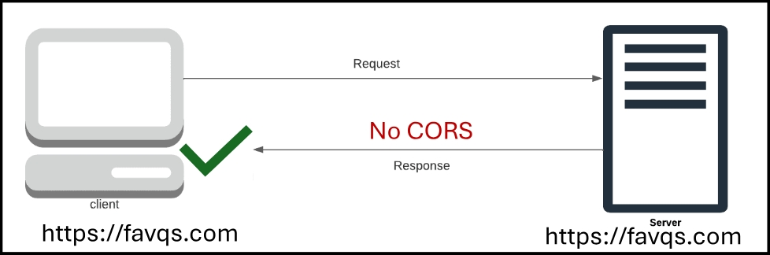
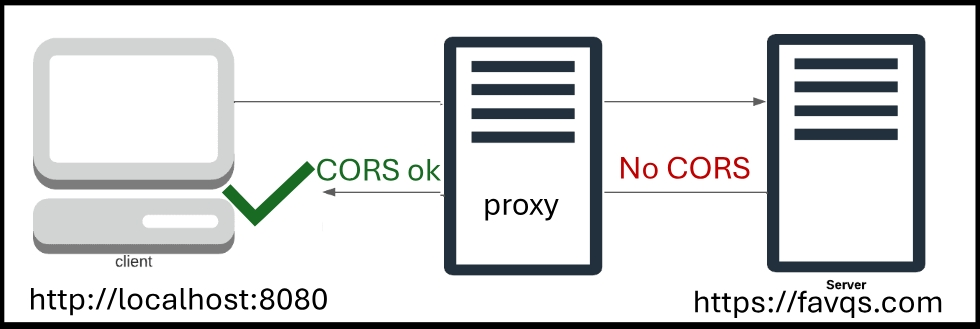

----------------
REST: Representational State Transfer
API: Application Programming Interface
A set of rules for communicating with a server.
The URL to connect with the server must be properly formed.
1. Client: Makes a request according to the REST API rules (menu).
2. REST API: Sends the request in a way the server understands.
3. Server: Processes the request.
4. REST API: Delivers the response (stringified object).
REST API analogy
-----------------------------
1. Customer: Requests a meal from the menu.
2. Waiter: Writes the request in a way the chef understands.
3. Chef: Processes the request by cooking the meal.
4. Waiter: Responds by delivering the meal.
Trivia API
----------------
1.
2. Use the text method
3.
Fetch function
-------------------------
const promise = fetch("https://opentdb.com/api.php?amount=1");
• Sends a request to the URL of the REST API
• Returns a promise
• Its resolve value is not a stringified object.
• The resolve value is a special object created by the fetch function.
• There is an extra step to access the response from the REST API.
The text method
---------------------------
• Retrieves the stringified object from the fetch object
• Returns a promise
Extracting the Data
-------------------------------
Displaying the Data
------------------------------------------
1. Create sample HTML of a trivia question and it's answers
2. Converted it to a template string
3. Replaced with variables
4. Output to an HTML element
function viewResponse(resolveValue) {
debugger;
const response = JSON.parse(resolveValue);
const results = response.results;
const item = results[0];
const question = item.question;
const correctAnswer = item.correct_answer;
const incorrects = item.incorrect_answers;
Specifying the Data
------------------------------------------
1. Specify the amount to get multiple questions.
2. You can select a catagory.
https://opentdb.com/api.php?amount=3&category=15&type=multiple
Postman App
----------------
Application for trying and testing APIs
Key Value Pairs
---------------------------
• They specify the data we want to request
• Key is on left, value is on the right
• Connected with = and separated by &
• Starts with ?
1. Insert key value pairs
2. Send a request
REST API Endpoint
-------------------------
A path that is appended to the base URL.
Contains data about a specific category.
Question of the Day.
/qotd
REST API key
--------------
A unique string (or code) that grants access to a REST API
To use some REST APIs, an API key is required
CORS
-----------
• Cross Origin Resource Sharing
• Origin: The web address of the client and server
• Cross Origin: Different origins
• Resource: Data such as files and stringified objects
• Resource Sharing: Transmitting the resource
----------------------------------------------

• The origin's policy for sharing resources
• Servers are supposed to tell browsers their CORS policy
• A list of origins that are allowed to access the server
• Browsers block the response if the origin is not on the list
--------------
• Some servers do not specify their CORS policy
• Browsers automatically block responses from different origins
• The quotes API doesn't specify a CORS policy
• Browsers automatically block responses from the quotes API
------------------------------------------

CORS Proxy Server
----------------------------------

1. Accepts the request from the client
2. Forwards the request to the API
3. Receives the response from the API
4. Manipulates the response so the browser doesn't block it
REST: Representational State Transfer API: Application Programming Interface A set of rules for communicating with a server. The URL to connect with the server must be properly formed. 1. Client: Makes a request according to the REST API rules (menu). 2. REST API: Sends the request in a way the server understands. 3. Server: Processes the request. 4. REST API: Delivers the response (stringified object).
1. Customer: Requests a meal from the menu. 2. Waiter: Writes the request in a way the chef understands. 3. Chef: Processes the request by cooking the meal. 4. Waiter: Responds by delivering the meal.